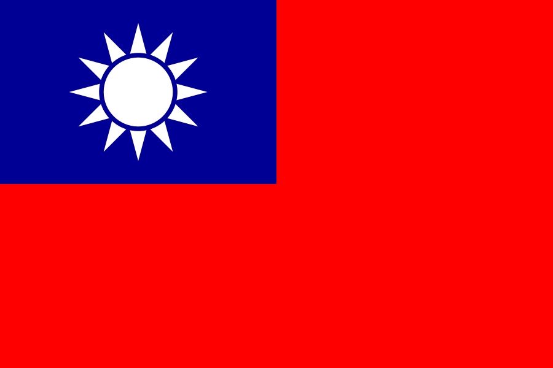

Playstation 2
 Lançado em 4 de março de 2000
Lançado em 4 de março de 2000 Lançado em 26 de outubro de 2000
Lançado em 26 de outubro de 2000 Lançado em 24 de novembro de
2000
Lançado em 24 de novembro de
2000 Lançado em 30 de novembro de 2000
Lançado em 30 de novembro de 2000
-  Lançado em 24 de janeiro de 2001
 Lançado em 22 de fevereiro
de 2002
Lançado em 22 de fevereiro
de 2002 Lançado em 1 de janeiro de 2004
Lançado em 1 de janeiro de 2004 Lançado em 18 de
novembro de 2002
Lançado em 18 de
novembro de 2002

Playstation 4
- América do norte: lançado em 15 de Novembro de 2013
- Europa: lançado em 29 de Novembro de 2013
- Lançado em 29 de novembro de 2013
- Lançado em 22 de Fevereiro de 2014

Playstation 1
- Lançado em 3 de dezembro de 1994
- Lançado em 3 de dezembro de 1994
- América do norte: lançado em a 9 de setembro de 1995
- Europa: Lançado em 29 de setembro de 1995